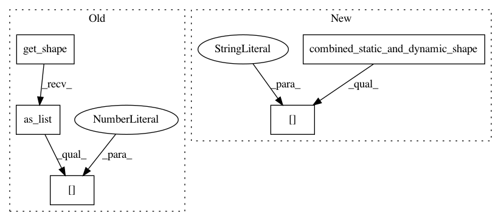

1ea84b7fa9a03781d22837f91683462d823202ea,research/object_detection/predictors/heads/class_head.py,WeightSharedConvolutionalClassHead,predict,#WeightSharedConvolutionalClassHead#Any#Any#,272
Before Change
biases_initializer=tf.constant_initializer(
self._class_prediction_bias_init),
scope=self._scope)
batch_size = features.get_shape().as_list()[0]
if batch_size is None:
batch_size = tf.shape(features)[0]
class_predictions_with_background = self._score_converter_fn(
class_predictions_with_background)
After Change
biases_initializer=tf.constant_initializer(
self._class_prediction_bias_init),
scope=self._scope)
batch_size, height, width = shape_utils.combined_static_and_dynamic_shape(
features)[0:3]
class_predictions_with_background = tf.reshape(
class_predictions_with_background, [
batch_size, height, width, num_predictions_per_location,
self._num_class_slots
In pattern: SUPERPATTERN
Frequency: 3
Non-data size: 5
Instances
Project Name: tensorflow/models
Commit Name: 1ea84b7fa9a03781d22837f91683462d823202ea
Time: 2020-11-24
Author: gardener@tensorflow.org
File Name: research/object_detection/predictors/heads/class_head.py
Class Name: WeightSharedConvolutionalClassHead
Method Name: predict
Project Name: tensorflow/models
Commit Name: 5d5fb7ccf6e6aa056532e10c167e83aced2c924f
Time: 2017-07-18
Author: derekjchow@gmail.com
File Name: object_detection/meta_architectures/faster_rcnn_meta_arch.py
Class Name: FasterRCNNMetaArch
Method Name: _flatten_first_two_dimensions
Project Name: tensorflow/models
Commit Name: 1ea84b7fa9a03781d22837f91683462d823202ea
Time: 2020-11-24
Author: gardener@tensorflow.org
File Name: research/object_detection/predictors/heads/keras_class_head.py
Class Name: WeightSharedConvolutionalClassHead
Method Name: _predict